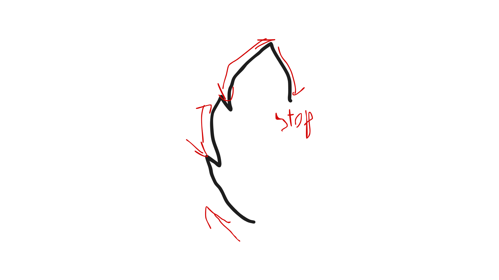
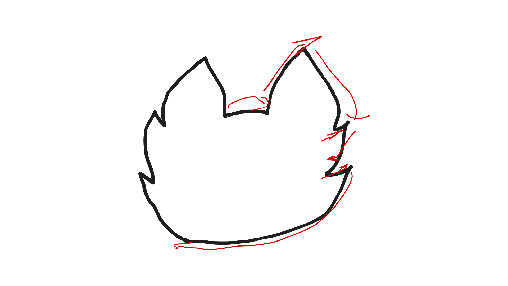
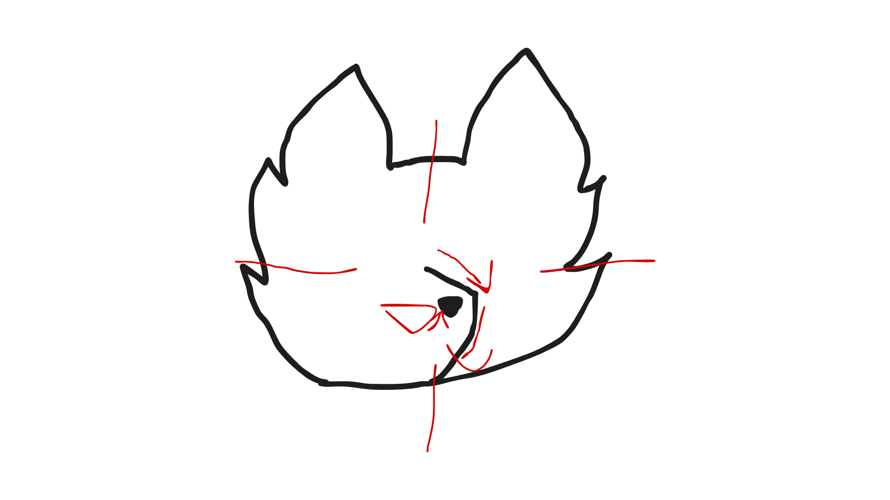
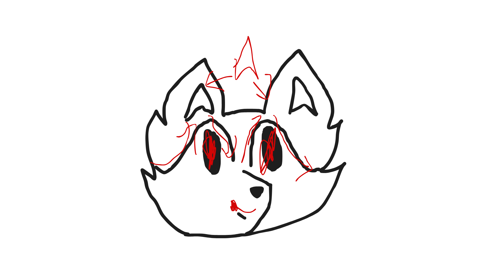
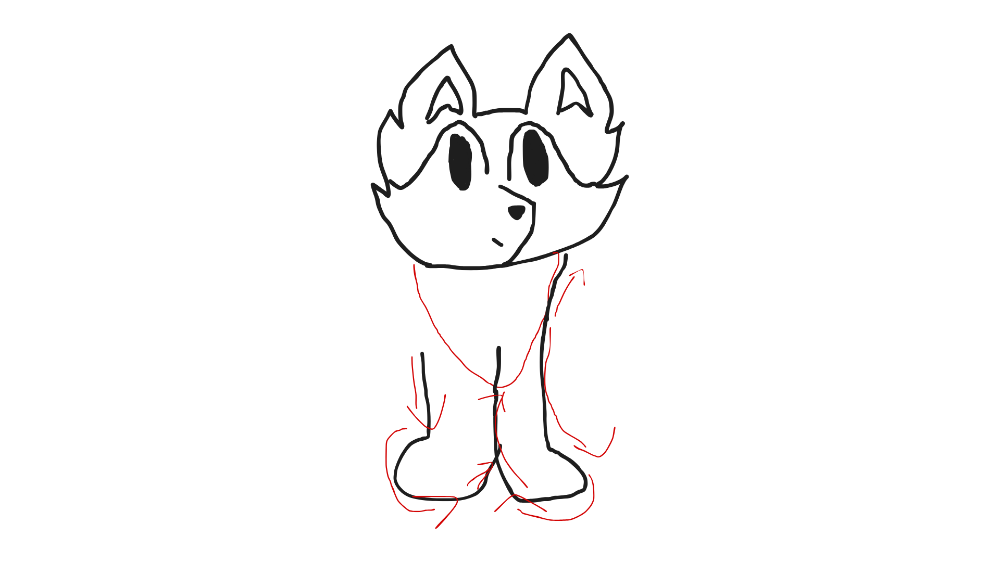
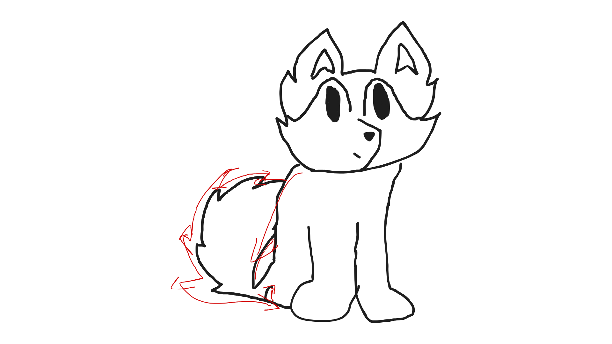
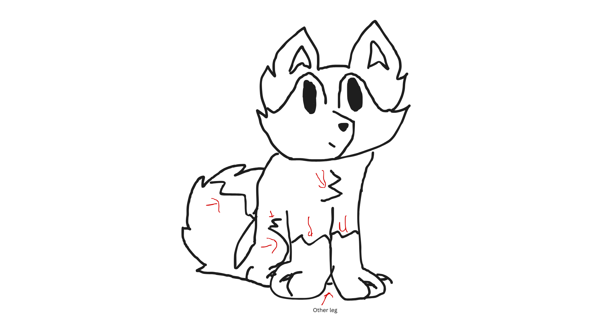
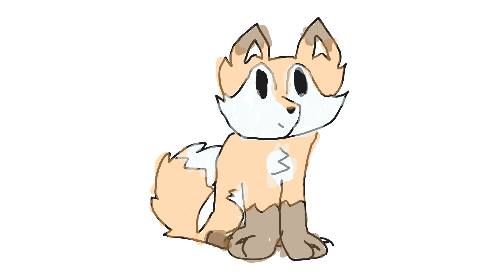

First start at the mid-point of your page or where ever you are drawing this cartoon fox. From there you will make a arching curve up to the left, and then go back down with the same arch. You will repeat this process one more time. Then you will make one last arch to make an arrow at the top and come back down with a reverse of the previous arch. Then await step 2.

Step 2
Now create a bridge between the ears, now do the same steps as step one, but reverse. So you will create a second exponential arrow, stop and go up a bit and go back with the curve like you are drawing curving cartoon pine tree upside down. Then at last connect the line with where you started the head.

Step 3
Locate around the center of the head. You will put the snout here. Make a short, straight line pointing slightly down. The more down you point the shorter the line you make. This gives off an effect that it is coming out of the face without ruining the cartoon look. Then make a curved line down till you meet the bottom of the head. In the center of this wonky half curved half straight arrow to the right add a triangle for the nose.

Step 4
First start by drawing eyes. For these details you can draw the eyes however you'd like, but I have found drawing ovals make the best eyes. Pie cut eyes are a close second. Then draw to concave kites as shown in red above the head in the ears. These make the ears look like ears, the concave part gives it life and not just straight lines. It is optional but you can add a mouth with what ever facial expression you would want. Not adding a mouth makes it look expressionless in a good way.

Step 5
Draw a slightly curved line down til you get to where you think the feet should be. Make a curve for the foot and then breing it up to just pass the middle of the body, if it looks wrong restart the legs this leg controls the rest of the body. For the other leg start parrelel to where you ended the first leg and draw down and make another foot the other way and attatch it to the first leg like it is behind it.

Step 6
First start at the equal and opposite side you connected the other side of the head to the body. Make a curve down and curve quickly up leaving some space at the bottom for the end of the tail. Attached to it make a tail, I have it slightly behind the body to give distance effect but you don't have to do this. On the way up and down add reverse, curved pine tree details for fur effect. Make sure tip of the tail is pointy. When you get to just above the feet make a line that goes up a fifth of the left foot and connect them. You can add a slight curve to seperate the back and tail.

Step 7
Details time! Add a scoop next to the left leg to finish the back leg. Between the front to legs add a line to add the second back leg. Make mountains on the tail for the white tipped tail. add some fluff on the chest. Add some fluff between the back leg and left leg to seperate orange and white. Then add more mountains for the classic fox boots.

Step 8
You can color it however you like but this is how I color it. However; Enjoy my version of the Fox!
